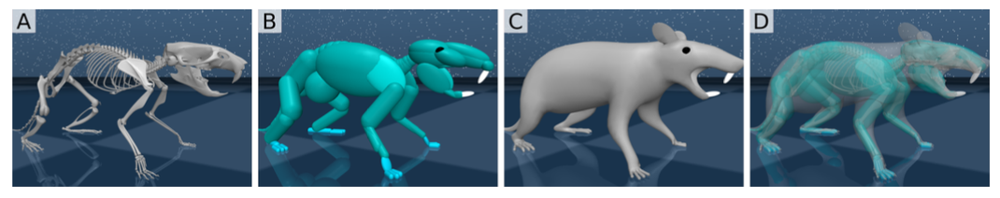

Introduction
This is an interesting paper that uses the algorithms of deep reinforcement learning and computational neuroscience to design a virtual rodent that performs some complex tasks in physical environment setting. The model is equipped with actuators, sensors and proprioceptive inputs, controlled by neural network to perform coordinated movements. This approach certainly provides a broad analysis of how an animal uses its senses and body to execute these tasks. The author managed to impressively use the data analysis techniques, enabling the agent to conduct flexible cognitive movements with egocentric stimuli.
Model Architecture and Implementation
The virtual rodent’s body is designed based on measurements of actual rats. The body has 38 controllable degrees of freedom and a RGB camera for proprioceptive information which is mounted on its head. It receives proprioceptive inputs regarding joint angles, velocity and positions of tendons and egocentric vectors from touch sensor. The model design is shown in the images below:
 Figure 1: (A) Anatomical skeleton of a rodent (as reference; not part of physical simulation). (B) A body designed around the skeleton to match the anatomy and model collisions with the environment. (C) Purely cosmetic skin to cover the body. (D) Semi-transparent visualization of (A)-(C) overlain.The researchers implemented four tasks for the rodent and trained the neural network to guide the rodent through these tasks. These tasks are an implementation of reinforcement learning and motor neuroscience and the tasks are as follows:
- Run along a corridor, over “gaps”, with a reward for traveling along the corridor at a target velocity.
- Collect all the blue orbs in a maze, with a sparse reward for each orb collected.
- Escape a bowl-shaped region by traversing hilly terrain, with a reward proportional to distance from the center of the bowl
- Approach orbs in an open field and activate them by tapping two times with their forepaw, with precise interval of 800ms and tolerance of 100ms.
The architecture of the model is based on backpropagation by training core module on multiple motor control task. First the egocentric visual image inputs are encoded into features and the proprioceptive state observations are encoded through a multi-layer perceptron. The outputs along with encoded features and proprioceptive observations are passed to the policy module. The policy module consists of stacked LSTM which produces actions. This method produces a single neural network that uses visual inputs to determine how to coordinates its body movements in order to solve the tasks.
Analysis
The analysis performed by the author was well articulated through this paper which provided surplus information about the behavioral features and task levels incorporated in the research. We found that the cell activity of core and policy layers had greater similarity with behavioral and postural features. And the policy activity is more similar across tasks than is core activity, which is very different across tasks. We also learnt that the different behaviors were seemingly associated with distinct rotations in neural activity space which follow stable orbits evolved at different timescales.
Concluding Thoughts
I found the author’s attempt fascinating as they tried to incorporate the knowledge of two different fields- deep neural net and animal research and trained and analyzed the model using various dimensionality reduction and visualization methods. The description and visualization of the training provided to the model is detailed and the analysis shown through the video is quite illustrative as well. At the same time, I also agree that similar research showing implementation of neuroethology and deep learning have also been presented previously with similar findings. But I believe that the learning achieved through this paper will motivate many new studies and underpin new research in this field.